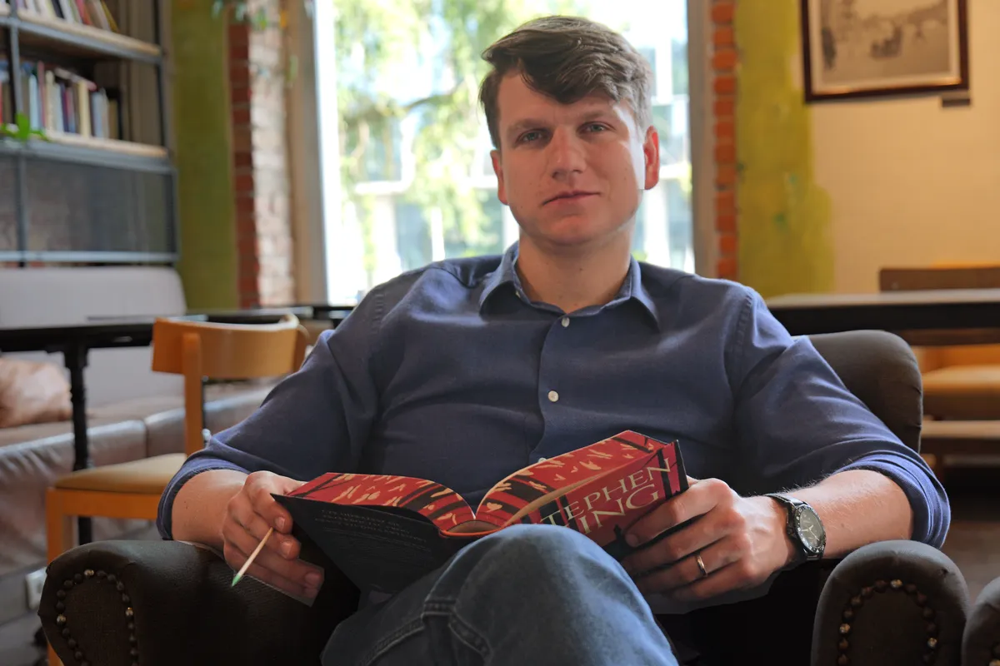

Rozrusznik czytania
pierwsze 15 minut ze mną

Dowiedz się więcej
W pierwszych 15 minutach ze mną przejdziesz kompletną metodę, która pozwala czytać 2 razy szybciej bez utraty zrozumienia. Zmienisz swoje podejście do czytania dzięki wykorzystaniu prostych technik takich jak wskaźnik czy metoda fotograficzna.
![Komentarz strefaczytacza na Instagramie: Pamiętam, jak lata temu miałem zareklamować Twój kurs, a umówiliśmy się na test/recenzję. Szczerze, w ogóle nie wierzyłem w ten kurs, pomyślałem, że to będzie krótka piłka i fajny materiał, choć niekoniecznie dla Ciebie. Ale byłeś uparty, a ja uczciwie i na serio podszedłem do ćwiczeń i efekty dało się szybko zauważyć. Ćwiczeń od dawna nie robię, a i tak pewne rzeczy, których uczyłeś w tym kursie towarzyszą mi do dzisiaj i różnica w szybkości czytania jest zauważalna. Dzięki za to!](assets/komentarz-strefaczytacza.webp)